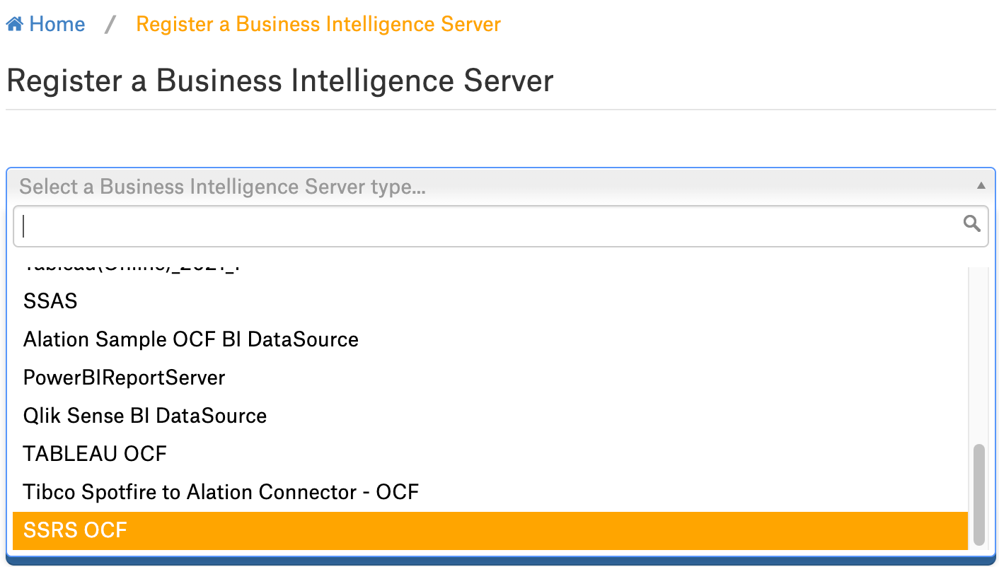
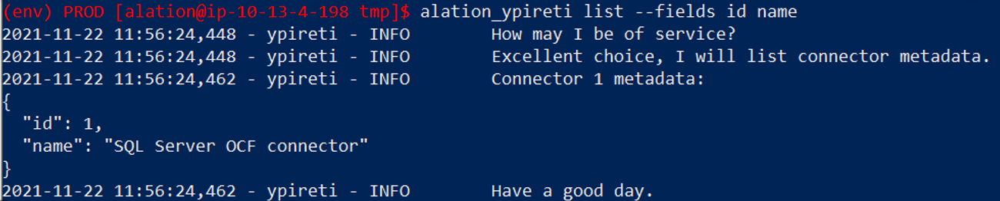

SSRS OCF Connector: Install and Configure¶
Alation Cloud Service Applies to Alation Cloud Service instances of Alation
Customer Managed Applies to customer-managed instances of Alation
Prerequisites¶
Ports¶
Make sure that the connector can access ports ports 80 (HTTP) and 443 (HTTPS) are available for SOAP API communication on the SSRS server.
Service Account¶
Perform the steps in the following sections to create a service account and assign it the required roles.
Create a Windows User¶
Create a Windows user account for SSRS. For details, refer to Microsoft Account in Microsoft documentation.
Assign Roles¶
Perform the following steps to assign the requried roles to the Windows user:
Log in to the SSRS web portal with the Administrator account.
Go to Settings > Site Settings.
On the Security tab, click Add group or user.
In the Group or user field, type the Windows user name and select the System User role. Click Ok.
Go to Home > Manage Folder.
On the Security tab, click Add group or user.
In the Group or user field, type the Windows user name and select the Browser role. Click Ok.
Navigate to the folder that you want to provide access. Go to Manage Folder > Security tab and click Use same security as parent folder.
Setup SSL with SSRS¶
Perform the following steps to set up SSL with SSRS:
Note
This configuration is required only if SSL authentication is used.
Generate a Self-Signing Certificate using Powershell¶
Run the
nslookupcommand for SSRS instance IP. From the result, note down thedns-name.nslookupcommand example -nslookup 10.12.9.76Dns-nameexample -ip-10-12-9-76.alation-test.comRun the following command. Replace the
dns-nameparameter with thedns-namegenerated in the previous step.New-SelfSignedCertificate -CertStoreLocation cert:\LocalMachine\my -dnsname {dns-name} $pwd=ConvertTo-SecureString "password1" -asplainText -force $file="C:\temp\ssrs_cert.pfx" # ensure folder C:\temp exists Export-PFXCertificate -cert cert:\LocalMachine\My\<Thumbprint produced during first command> -file $file -Password $pwd Import-PfxCertificate -FilePath $file cert:\LocalMachine\root -Password $pwd
Configure the Web Service URL¶
Open Reporting Services Configuration Manager and click Connect.
On the Web Site URL tab, click the HTTPS Certificate drop-down box and select the certificate you installed. Click Apply.
Update Authentication Configuration for Report Server¶
Locate and open the rsreportserver.cofig file from the SSRS folder on the machine that has SSRS installed.
Make the following changes in the rsreportserver.cofig and restart the report server.
Change Authentication type from the default RSWindowsNTLM to RSWindowsBasic
Set RSWindowsExtendedProtectionLevel property to allow
Set RSWindowsExtendedProtectionScenario to Direct
<Authentication> <AuthenticationTypes> <RSWindowsBasic/> </AuthenticationTypes> <RSWindowsExtendedProtectionLevel>allow</RSWindowsExtendedProtectionLevel> <RSWindowsExtendedProtectionScenario>Direct</RSWindowsExtendedProtectionScenario> <EnableAuthPersistence>true</EnableAuthPersistence> </Authentication>
Export Certificate¶
Go to Control Panel > Manage computer certificates.
Select the certificate at Personal/Certificates.
Right click on the certificate and select All Tasks > Export.
Click Next.
Select the option No, do not export the private key and Click Next.
Make sure that the DER encoded binary X.509 (.CER) is selected and click Next.
Select a location to save the certificate and click Next.
Click Finish.
Important
Make sure your firewall is set to allow incoming connections on port 443.
JDBC URI¶
BI Server URI Format¶
<Host or IP_Name>:<Port>/Report_Manager_Virtual_Directory_Name
Note
Port number must be included in the URI only if any custom port is used apart from the default ports 80 or 443.
Example:
http://10.13.81.180/reports
BI Connection URI Format¶
<Host or IP_Name>:<Port>
Note
Port number must be included in the URI only if any custom port is used apart from the default ports 80 and 443.
Example:
http://10.13.81.180
Installation¶
Step 1: Install the Connector¶
Alation On-Premise¶
Important
Installation of OCF connectors requires Alation Connector Manager to be installed as a prerequisite.
To install an OCF connector:
If this has not been done on your instance, install the Alation Connector Manager: Install Alation Connector Manager.
Ensure that the OCF connector Zip file is available on your local machine.
Install the connector on the Connectors Dashboard page using the steps in Manage Connectors.
Alation Cloud Service¶
Note
On Alation Cloud Service instances, Alation Connector Manager is available by default.
Depending on your network configuration, you may need to use Alation Agent to connect to databases.
Connection via Alation Agent¶
Ensure that Alation Agent is enabled on your Alation instance. If necessary, create a Support ticket with Alation for an Alation representative to enable the Alation Agent feature on your instance and to receive the Alation Agent installer.
Connection Without Agent¶
To install an OCF connector:
Ensure that the OCF connector Zip file is available on your local machine.
Install the connector on the Connectors Dashboard page using the steps in Manage Connectors.
Step 2: Create and Configure a New Data Source¶
In Alation, add a new data source:
Log in to Alation as a Server Admin.
Expand the Apps menu on the right of the main toolbar and select Sources.
On the Sources page, click +Add on the top right of the page and in the list that opens, click BI Source. This will open the Add a Data Source wizard.
On the first screen of the wizard, specify a name for your data source, assign additional Data Source Admins, if necessary, and click the Continue Setup button on the bottom. The Add a Data Source screen will open.
On the Add a Data Source screen, the only field you should populate is Database Type. From the Database Type dropdown, select the connector name. After that you will be navigated to the Settings page of your new data source.
The name of this connector is SSRS OCF.
Settings¶
Note
This section describes configuring settings for credentials and connection information stored in the Alation database. If your organization has configured Azure KeyVault or AWS Secrets Manager to hold such information, the user interface for the General Settings page will change to include the following icons to the right of most options:

{kind=link}
{kind=link}
{kind=link}
{kind=link}
{kind=link}
{kind=link}
{kind=link}
{kind=link}
{kind=link}
{kind=link}
{kind=link}
{kind=link}
{kind=link}
{kind=link}
{kind=link}
By default, the database icon is selected, as shown. In the vault case, instead of the actual credential information, you enter the ID of the secret. See Configure Secrets for OCF Connector Settings for details.
Perform the configuration on the Settings page.
Application Settings¶
Specify Application Settings if applicable. Save the changes after providing the information by clicking Save.
Parameter |
Description |
|---|---|
Enable Raw Dump or Replay |
The options in this drop list can be used to dump the extracted metadata into files in order to debug extraction issues before ingesting the metadata into Alation. This feature can be used during testing in case there are issues with MDE. It breaks extraction into two steps: first, the extracted metadata is dumped into files and can be viewed; and second, it can be ingested from the files into Alation. It is recommended to keep this feature enabled only if debugging is required.
|
Disable Automatic Lineage Generation |
Select the Disable Automatic Lineage Generation checkbox to skip the creation of automatic Lineage after extraction. When automatic Lineage generation is disabled, during extraction Alation does not calculate Lineage data for this BI source. For more information, see Disable Automatic Lineage Generation. |
Disable Permission Enforcement |
Not applicable. Leave the default setting (selected). |
Disable Certification |
Not applicable. Leave the default setting (selected). |
Server URI |
Provide the Server URI to access the SSRS server from the catalog page. Refer BI Server URI Format. |
Connector Settings¶
Server Connection¶
Populate the BI source connection information and save the values by clicking Save in this section.
Parameter |
Description |
|---|---|
Data Source Connection |
|
JDBC URI |
Specify the URI in the required format. Note: Report manager virtual directory name is not required for this URI which will be used for extraction. |
Username |
Specify the service account username. |
Password |
Specify the service account password. |
Extract SQL Server Reporting Services (SSRS) Version |
Specify the SSRS version. The default version supported is 2019. |
Report Server Virtual Directory |
Specify the report server virtual directory name. The default value is ReportServer. |
Additional Settings |
|
Enable SSL Certification |
Enable or disable SSL authentication by selecting or clearing the Enable SSL Certification checkbox. If the Enable SSL Certification checkbox is enabled, upload the SSL certificate using the upload link below this checkbox. |
Report Manager Virtual Directory |
Specify the report manager virtual directory name. The default value is Reports. |
Enable Preview Extraction |
Enable or disable preview extraction by selecting or clearing the Enable preview extraction checkbox. Note: If the preview extraction is enabled it will eventually increase the MDE time. |
Logging Configuration¶
Select the logging level for the connector logs and save the values by clicking Save in this section. The available log levels are based on the Log4j framework.
Parameter |
Description |
|---|---|
Log level |
Select the log level to generate logs. The available options are INFO, DEBUG, WARN, TRACE, ERROR, FATAL, ALL. |
Application Settings¶
Not applicable.
Obfuscate Literals¶
Obfuscate Literals — Enable this toggle to hide the details of the queries in the catalog page that are ingested via QLI or executed in Compose. This toggle is disabled by default.
Test Connection¶
Under Test Connection, click Test to validate network connectivity.
Extraction Settings¶
Selective Extraction¶
Under Selective Extraction, you can select the projects to include or exclude from extraction. Selective extraction settings are used to apply a filter to include or exclude a list of projects.
To configure selective extraction:
Enable the Selective Extraction toggle if you want only a subset of projects to be extracted.
Click Get List of Projects to first fetch the list of projects. The status of the Get Projects action will be logged in the Extraction Job Status table at the bottom of the Metadata Extraction page.
When project synchronization is complete, a drop-down list of the projects will become enabled.
Select one or more projects as required.
Check if you are using the desired filter option. Available filter options are described below:
Filter Option
Description
Extract all Projects except
Extract metadata from all projects except from the selected projects.
Extract only these projects
Extract metadata only from the selected projects.
Click Run Extraction Now to extract metadata. The status of the extraction action is also logged in the Job History table at the bottom of the page.
Note
Once you have extracted, if you notice any mismatch between the folders in the SSRS instance and in Alation, make sure that your connector is updated to version 1.2.0.
Automated and Manual Extraction¶
If you wish to automatically update the metadata extracted into the Catalog, under Automated and Manual Extraction, turn on the Enable Automated Extraction switch and select the day and time when metadata must be extracted. The metadata extraction will be automatically scheduled to run on the selected schedule.
Troubleshooting¶
Refer to Troubleshooting.
Migration from Native to OCF¶
You can migrate your existing SSRS BI source that is cataloged using the built-in (GBMv1) connector for SSRS to the SSRS OCF connector.
Prerequisites¶
Before you begin the migration, make sure you do the Alation backup to restore back to the last working stage incase of migration failure.
Make sure you have the SSRS migration scripts provided by Alation with the connector zip file. For Alation version < 2022.4, contact Alation Support for the migration scripts.
Install the SSRS OCF connector. Do not configure the new BI source as the migration script supplied by Alation will migrate the native (GBMv1) BI source to OCF BI source.
Find out the ID of the BI source you want to migrate. See How to Find Data Source ID.
Migration¶
Perform the following steps:
Copy the migration scripts provided by alation to the tmp directory. Substitute the placeholder
<ssh-user>@{alation-instance-ip}with the actual value.scp copy_ssrs_gbmv1_logical_data_to_ocf.py <ssh-user>@{alation-instance-ip}:/tmp scp taskserver.py <ssh-user>@{alation-instance-ip}:/tmp
Use SSH to connect to the Alation server.
Stage the migration scripts in the
one_off_scriptsdirectory.sudo cp /tmp/copy_ssrs_gbmv1_logical_data_to_ocf.py /opt/alation/alation/opt/alation/django/rosemeta/one_off_scripts sudo cp /tmp/taskserver.py /opt/alation/alation/opt/alation/django/bi_metadata/models/bi_server/strategies/v2
Enter the Alation shell and navigate to
one_off_scriptsdirectory.sudo /etc/init.d/alation shell sudo su alation cd opt/alation/django/rosemeta/one_off_scripts/
Run the command given below to find out the ID of the OCF connector that will be used for this migration:
alation_ypireti list --fields id nameThis command returns a list of IDs and names of the OCF connectors that are currently running on the Alation host. Locate the ID of the connector that you need.

Run the migration scripts using the following command. Substitute the placeholders
{Native(GBMv1) SSRS Datasource Server Id}, {SSRS OCF Connector Id}with actual values.python copy_ssrs_gbmv1_logical_data_to_ocf.py --source_id {Native(GBMv1) SSRS Datasource Server Id} --id {SSRS OCF Connector Id} --confirmExample:
[root@df33fe74ea7f one_off_scripts]# python copy_ssrs_gbmv1_logical_data_to_ocf.py --source_id 2 --id 1 --confirm
Run full metadata extraction for folder hierarchies and to view the parent to child relationship of the folders. The full extraction is required as the parent to child relationship of the folders is not supported in the native connector.